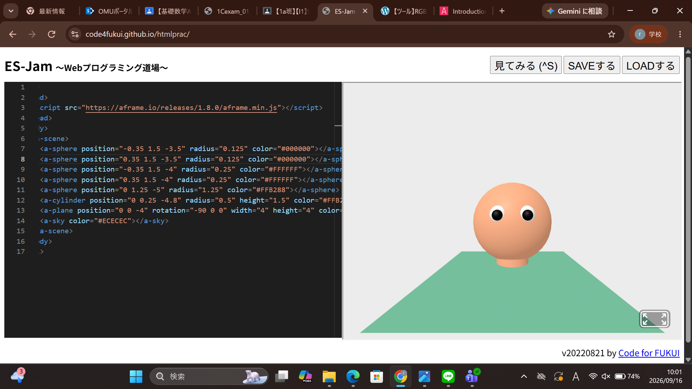
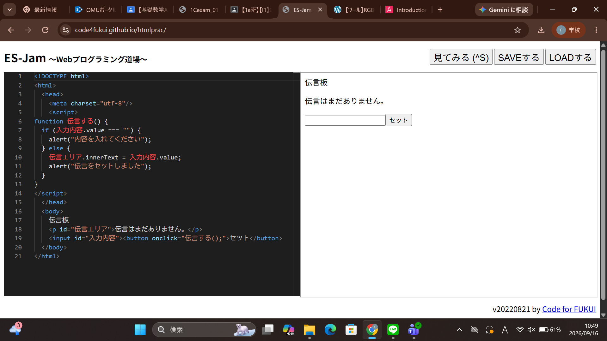

３週目のレポート ： 公大高専１年実習I-1
1a班07番 河合修平
第3週目
3-1 JavaScript体験：VR空間を作る

自作した３次元空間
1.内容
プログラミング道場を使って、球体、円柱、立方体を出して自分の思うような形を作るように移動させる方法を学んだ。
動かす向きや回転の向きも学んだ。
2.感想
自分の思ったような形にしようとすると小さい単位で動かさないといけないというところがやりこみ要素があってとても面白かった。
今回は顔を作ろうとしたが、完成しなかったのでまたいつか完成させたいと思った。
3-2 JavaScript体験：伝言プログラムを作る

伝言板
1.内容
Webプログラミング道場を使って、メッセージを打てるところを作り、伝言ができるようにホームページを作った。
改行以外のコードも学んだ。
2.感想
意外と少ないコード数で作れるんだなと感じた。
少しのミスでも全く動かなくなるので、細かくミスがないか確認することや、
動かす前にプログラミングのコードを見てどうなるか先に考えることが大切だと感じた。
各ページへのリンク
1週目のレポート
2週目のレポート
3週目のレポート
私のホームページ